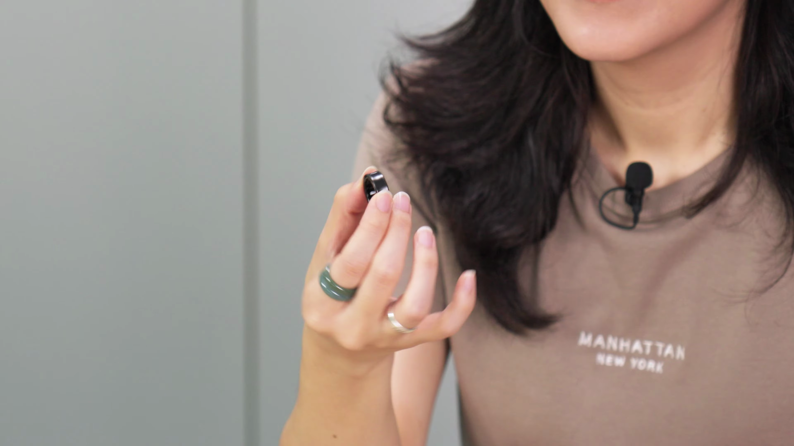
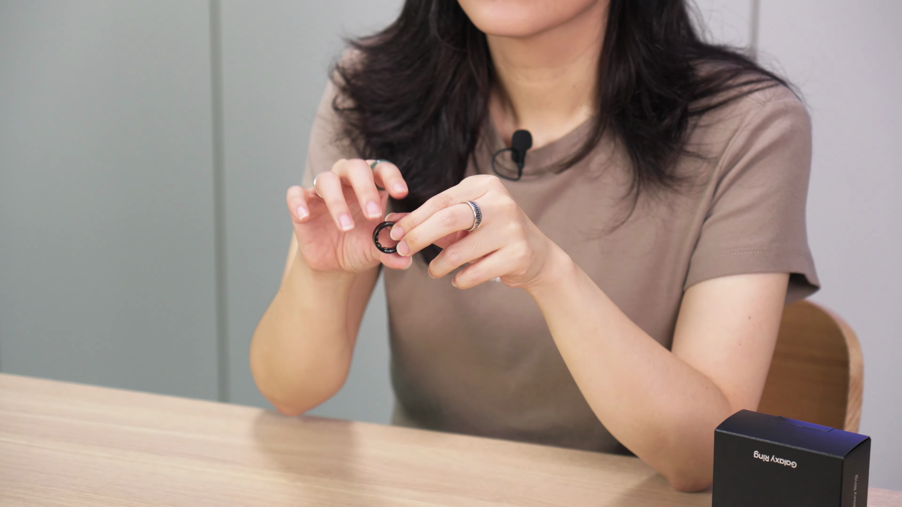
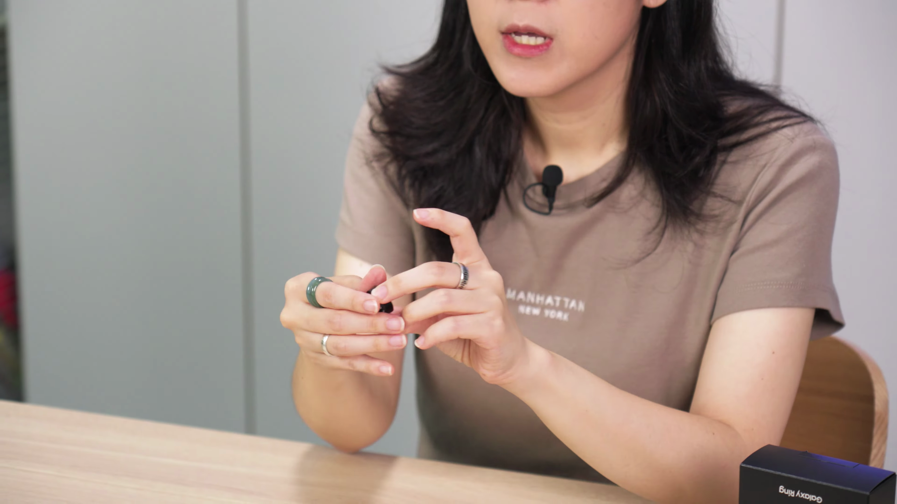
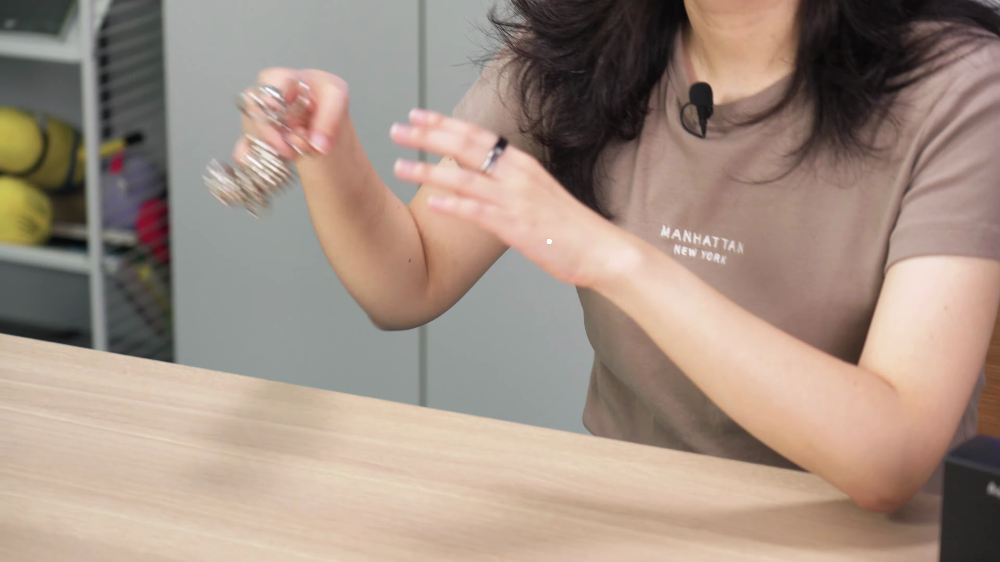
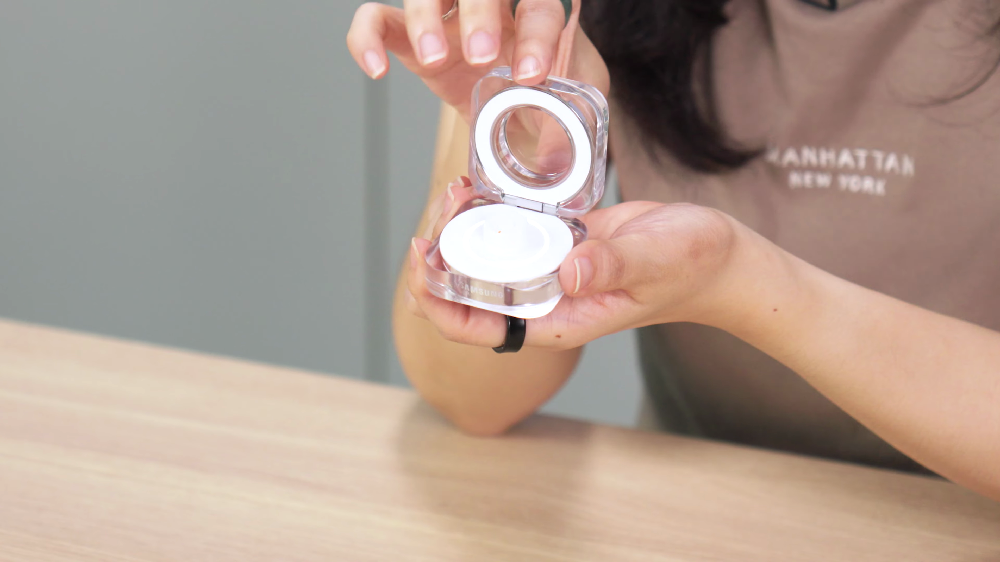
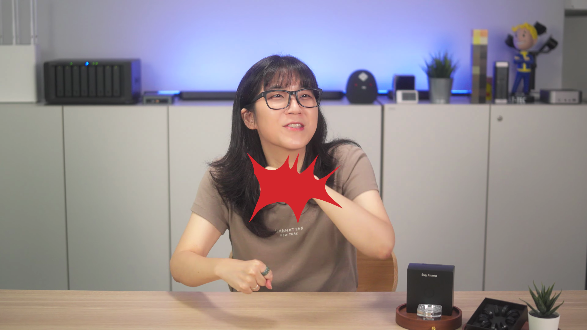
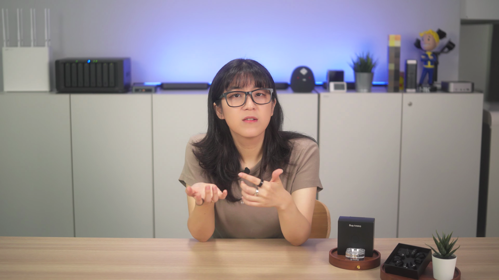

이번 블로그 포스팅에서는 삼성의 최신 건강 관리 기기인 갤럭시 링에 대한 리뷰를 진행합니다. 갤럭시 링은 건강 모니터링 기능이 포함된 반지 형태의 스마트 웨어러블 기기로, 실제 사용 경험과 제품의 특징을 상세히 살펴보겠습니다.

초기 사용 경험
- 상품 개봉부터 사이즈 문제까지의 상황 설명
제품을 처음 착용하기 위해 반지 사이즈를 측정했지만, 작은 사이즈가 없어서 어려움을 경험했다.

제품 개요
- 삼성의 갤럭시 링 소개
- 건강과 피트니스 측정 기능
갤럭시 링은 삼성에서 출시한 건강 관리 기기로, 심박수, 수면 패턴, 스트레스 수준을 측정할 수 있는 다양한 센서가 탑재되어 있다.

구매 가격 및 사용 기간
- 자비로 구매한 가격
- 2개월간의 사용 경험
개인적으로 50만원에 갤럭시 링을 구매해 2개월간 사용하면서의 경험에 대해 이야기한다.

리뷰 포맷과 방향
- 기초 스펙보다 실제 사용 경험에 중점
이 포스팅에서는 갤럭시 링의 사양보다 실제 사용 시의 장단점에 대해 다룰 예정이다.

디자인
- 블랙 색상 선택 이유
- 타 브랜드 제품과의 비교
삼성 갤럭시 링은 깔끔한 디자인으로 타 브랜드의 링들과 비교해 세련됨을 느낄 수 있다.

충전 기능 및 효과
- 충전 덱의 디자인
- 충전 후 사용 가능한 기간
갤럭시 링의 충전 덱은 아이크림 통처럼 보이지만 기능적으로 훌륭하며, 풀 충전 후 5일 이상 사용 가능하다.

스마트 기능 및 운동 측정
- 칼로리 측정의 정확성 문제
- 일상적인 활동 기록
갤럭시 링이 측정한 칼로리와 운동 데이터의 정확성에 의문이 있지만, 일반적인 활동 기록은 잘 수행된다.

스트레스 및 수면 측정
- 정확한 스트레스 지수 측정 경험
- 수면 측정 기능의 유용함
스트레스 지수 측정은 다소 변동성이 있지만, 수면 패턴 측정은 매우 정확하게 이루어졌다.

주요 기능 및 용도
- 건강 관리 기능의 적합성
- 패시브 운동으로의 활용
갤럭시 링은 건강 관리 혹은 다이어트 용도로 더욱 적합하며, 그 누구라도 쉽게 사용할 수 있다.

가격에 대한 가치 판단
- 50만원의 가격에 대한 고민
- 기능이 적합한 사용자의 범위
갤럭시 링의 가격이 비싼 편이지만 기능을 고려했을 때 가치를 매기기가 애매하다.
Tags: #갤럭시 링 #스마트 웨어러블 #건강 관리 #디자인 #사용 후기 #기능 비교 #스마트폰 연동